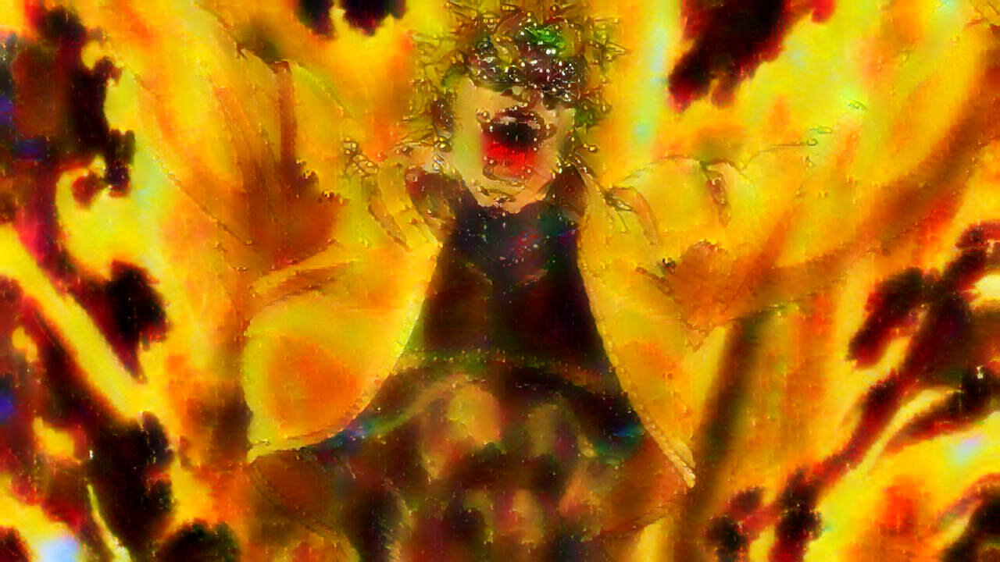

A Little Backstory
I made these AI images in my Intro to Digital Media Arts class. The objective of the project was to use ai to blend two different pictures together using AI. One of the pictures would be the overall look of the picture and the other would be the texture or new estetice of the picture. The objective was to do this 3 separate times and each final picture needed to connect thematically with the others.
I started experimenting with JoJo pictures as the underlying picture, because I like the use of colors. For the textures I used pictures of nebulas, because I thought the color and texture of the nebula would exaggerate the colors of the original JoJo pictures. I used the same nebula for the picture on the top and center right, because I wanted to see what would happen if the same. For the picture on the bottom, I used a nebula that was predominantly yellow and had hints of red and green in order to match the given color pallet of the original picture.
